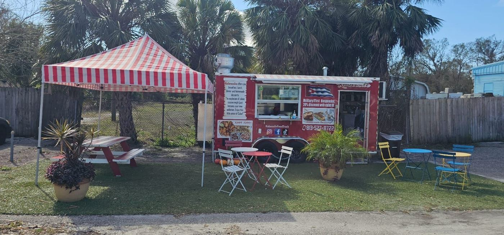

A little piece of Cuba in Tampa
Kabeosile Food Truck · Cuban pizza & comida criolla · 4.9★
Call (813) 527-8722Flip a domino
Tap each tile to see what comes out of the window.
From the tables
“I’ve had Cuban pizza in Cuba and in the states, and Kabeosiles Cuban Pizza is hands down the best I have ever had. It provided that taste from home but with better ingredients. Their home…”
“This Cuban food truck is an absolute gem! The food is authentic, fresh, and packed with flavor. The pork was tender and perfectly seasoned, and the tostones were crispy and delicious. Their…”